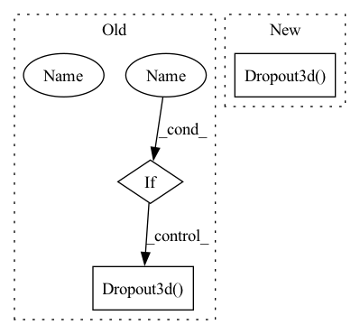

Pattern ID :3912

Before Change
self.do1 = passthrough
self.relu1 = ELUCons(elu, outChans)
self.relu2 = ELUCons(elu, outChans)
if dropout:
self.do1 = nn.Dropout3d()
self.ops = _make_nConv3d(outChans, nConvs, elu)
def forward(self, x):
After Change
super(DownTransition3d, self).__init__()
self.down_conv = nn.Conv3d(inChans, outChans, kernel_size=2, stride=2)
self.bn1 = nn.GroupNorm(8, outChans)
self.drop = nn.Dropout3d(p=prob, inplace=True)
self.relu1 = nn.ReLU(inplace=True)
self.ops = _make_nConv3d(outChans, nConvs, prob)
In pattern: SUPERPATTERN
Frequency: 3
Non-data size: 3
Instances
Fragment ID: 14780169
Project Name: junqiangchen/pytorchdeeplearing
Commit Name: e46edd9af5aee29ef03640c2c17f8f480a4c5168
Time: 2022-07-26
Author: 1207173174@qq.com
File Name: networks/VNet3d.py
M Class Name: DownTransition3d
N Class Name: DownTransition3d
M Method Name: __init__(5)
N Method Name: __init__(6)
M Parent Class: nn.Module
N Parent Class: nn.Module
M File Name: networks/VNet3d.py
N File Name: networks/VNet3d.py
M Start Line: 73
M End Line: 82
N Start Line: 51
N End Line: 52
'>
Before Change
@staticmethod
def _block(in_channels, features, name, dropout=False):
if dropout:
block = nn.Sequential(OrderedDict([
(name + "conv1", nn.Conv3d(
in_channels=in_channels,
out_channels=features,
kernel_size=3,
padding=1,
bias=False, ),),
// (name + "norm1", nn.BatchNorm3d(num_features=features)),
(name + "norm1", nn.GroupNorm(num_groups=8, num_channels=features)),
(name + "relu1", nn.ReLU(inplace=True)),
(name + "conv2", nn.Conv3d(
in_channels=features,
out_channels=features,
kernel_size=3,
padding=1,
bias=False, ),),
// (name + "norm2", nn.BatchNorm3d(num_features=features)),
(name + "norm2", nn.GroupNorm(num_groups=8, num_channels=features)),
(name + "relu2", nn.ReLU(inplace=True)),
(name + "dropout2", nn.Dropout3d()),
]))
else:
block = nn.Sequential(OrderedDict([
After Change
padding=1,
bias=False, ),),
(name + "norm2", nn.GroupNorm(num_groups=8, num_channels=features)),
(name + "droupout2", nn.Dropout3d(p=prob, inplace=True)),
(name + "relu2", nn.ReLU(inplace=True)),
]))
return block
'>
Fragment ID: 14780171
Project Name: junqiangchen/pytorchdeeplearing
Commit Name: e46edd9af5aee29ef03640c2c17f8f480a4c5168
Time: 2022-07-26
Author: 1207173174@qq.com
File Name: networks/Unet3d.py
M Class Name: UNet3d
N Class Name: UNet3d
M Method Name: _block(4)
N Method Name: _block(4)
M Parent Class: nn.Module
N Parent Class: nn.Module
M File Name: networks/Unet3d.py
N File Name: networks/Unet3d.py
M Start Line: 66
M End Line: 109
N Start Line: 66
N End Line: 85
'>
Before Change
self.do1 = passthrough
self.do2 = nn.Dropout3d()
self.relu = ELUCons(elu, outChans)
if dropout:
self.do1 = nn.Dropout3d()
self.ops = _make_nConv3d(outChans, nConvs, elu)
self.conv = nn.Conv3d(inChans, outChans, kernel_size=1)
After Change
super(UpTransition3d, self).__init__()
self.up_conv = nn.ConvTranspose3d(inChans, outChans, kernel_size=2, stride=2)
self.bn = nn.GroupNorm(8, outChans)
self.drop = nn.Dropout3d(p=prob, inplace=True)
self.relu = nn.ReLU(inplace=True)
self.ops = _make_nConv3d(outChans, nConvs, prob)
self.conv = nn.Conv3d(inChans, outChans, kernel_size=1)
'>
Fragment ID: 14780173
Project Name: junqiangchen/pytorchdeeplearing
Commit Name: e46edd9af5aee29ef03640c2c17f8f480a4c5168
Time: 2022-07-26
Author: 1207173174@qq.com
File Name: networks/VNet3d.py
M Class Name: UpTransition3d
N Class Name: UpTransition3d
M Method Name: __init__(5)
N Method Name: __init__(6)
M Parent Class: nn.Module
N Parent Class: nn.Module
M File Name: networks/VNet3d.py
N File Name: networks/VNet3d.py
M Start Line: 94
M End Line: 103
N Start Line: 67
N End Line: 68